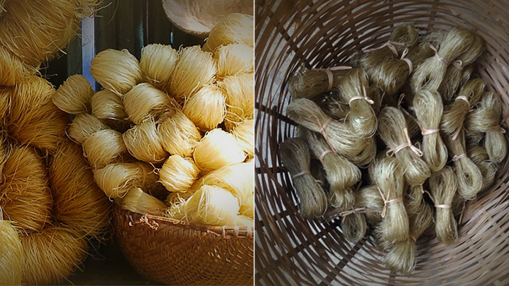

07 bí quyết để có một đĩa miến ngon, mềm dai nguyên sợi
Đăng bởi: Đức Dũng
Miến xào được nhiều người yêu thích vì mùi vị thơm ngon, sợi miến trong vắt đẹp mắt, sợi dai nhưng vẫn mềm và nhất là chứa ít tinh bột giúp hạn chế tăng cân. Miến là nguyên liệu có thể sáng tạo ra rất nhiều món ăn ngon, phổ biến nhất là miến xào. Nhưng sợi miến bị dính, vón cục và nát trong quá trình xào làm nhiều người ngại thực hiện món ăn này tại nhà. Đừng lo lắng, bài viết này sẽ hướng dẫn bạn 5 bí quyết xào miếng không dính, nguyên sợi mềm dai và còn mách nhỏ cho bạn những món ăn tuyệt ngon từ miến nữa, cùng nhau tìm hiểu bài viết nhé!
1. Miến làm từ gì?
Miến hay còn được gọi với tên bún tàu là loại thực phẩm dạng khô, dạng sợi được chế biến từ bột khoai lang, bột dong giềng, bột đậu xanh hoặc bột sắn.
Chính vì miến được sản xuất từ các loại ngũ cốc khác nhau nên miến rất giàu protein nhưng lại không chứa cholestorol rất tốt cho sức khỏe.
2. Những loại miến thông dụng trên thị trường
Có thể phân loại các miến thông dụng trên thị trường bằng 2 cách cơ bản: Dựa trên màu sắc có thể quan sát được bên ngoài, có 3 loại màu miến được sản xuất phổ biến trên thị trường:
- Miến có màu trắng đục hoặc trắng trong: Đây là loại miến này được sản xuất từ các loại tinh bột.
- Miến có màu vàng nhạt: Miến được nhuộm màu từ mật mía hoặc các nguyên liệu tạo màu tự nhiên để gia tăng hương vị và tăng tính thẩm mỹ.
- Miến có màu xám nhạt: Loại miến có màu sắc đặc biệt này được làm từ tinh bột của củ dong riềng, rất khác biệt và dễ dàng nhận biết.
Phân biệt dựa trên thành phần miến. Bạn có thể dễ dàng phân biệt miến dựa trên thông tin được ghi tại bao bì:
Miến gạo: Đây là loại miến chứa 90% tinh bột lúa trong miến, hàm lượng amylose chiếm khoảng 18- 45% quyết định độ dẻo của miến và protein chiếm khoảng 9.4%.
Miến dong: Loại miến xám đặc biệt được sản xuất từ tinh bột dong riềng (còn gọi là củ chuối hoặc củ chóc).
Miến dong chứa hàm lượng protein cao và chứa chất gel làm tái tạo kết tinh khiến sợi mì trong suốt bắt mắt hơn.

Miến đậu xanh: Như tên gọi, nguyên liệu chính là đậu xanh. Hàm lượng chất dinh dưỡng trong miến đậu xanh rất tốt cho sức khỏe và là loại miến được người tiêu dùng ưa chuộng.
Miến hỗn hợp: Đây là loại miến pha trộn những loại tinh bột như bột mì, bột gạo, tinh bột đậu xanh, tinh bột khoai tây,…
3. Bí quyết xào miến không dính, tránh vón cục và không bị nát đơn giản
Bước 1: Tách miến thành những bó nhỏ và rũ tơi miến
Miến thường được bánh thành những bó khô và lớn, nên trước khi chế biến, hãy xác định khẩu phần và định lượng ăn. Rũ miến cho tơi ra thành sợi, tránh rối để bước trụng miến được dễ dàng, miến suôn thành sợi đẹp mắt hơn mà miến không bị vón cục.
Bước 2: Ngâm miến trong nước lạnh từ 5 - 10 phút
Ngâm ngập miến trong nước lạnh từ 5 đến 10 phút. Lưu ý không nên ngâm lâu quá sẽ làm miếm mềm nhũn ra và mất đi độ ngọt vốn có của miến.
Bước 3: Trụng miến trong nước sôi và nhanh tay
Đâu là bước quan trọng nhất quyết định sự thành bại mẻ miến của bạn. Hãy kiên nhẫn chờ cho nước thật sôi, thả nhẹ miến vào trụng khoảng 1 - 2 phút.
Tốt nhất bạn để miến hẳn vào vợt, trong quá trình trụng, bạn chỉ cần đảo nhẹ vợt vài vòng là có thể vớt ra.
Bước 4: Ngâm miến vào nước lạnh ngay sau khi trụng
Sau khi vớt miến, thả ngay miến vào thau nước lạnh (tốt nhất có thêm vài viên đá lạnh) để miến không bị dính, ngâm khoảng 3 - 5 phút đến khi miến nguội hẳn thì với ra rổ để ráo nước. Bước này sẽ giúp những tinh bột tiết ra trong quá trình trụng sẽ được làm lạnh, tránh tình trạng miến dính bệt vào nhau.
Bước 5: Trộn miến với dầu hoặc lòng trắng trứng
Trộn miến với một ít dầu (dầu ăn, dầu ôliu, dầu mè...) hoặc lòng trắng trứng sẽ giúp miến không dính vào nhau, Nếu bạn ăn miến trộn thì không nên dùng lòng trắng trứng nhé!
Bước 6: Cắt miến kích thước vừa ăn
Sợi miến thường dài nên khi xào chung các nguyên liệu khác khó có thể hòa quyện xen kẻ vào nhau và khó ăn. Hãy dùng kéo cắt miến thành những đoạn vừa ăn nhé!
Bước 7: Cho miến vào sau cùng khi xào
Miến khi trụng cơ bản đã chín, nên nếu nấu miến xào, hãy xào chín các nguyên liệu và cho miến vào sau cùng, đảo nhẹ vài cái rồi tắt bếp ngay để xào miến không bị nát nhé!
4. Những món ăn ngon với miến tại nhà
Từng loại miến được chế biến thành nhiều món ăn ngon khác nhau. Miến gạo thường được dùng nhiều nhất cho các món xào, còn miến đậu xanh lại được dùng để nấu các món nước nhiều hơn. Miến dong với màu sắc đẹp mắt được sử dụng cho các món xào và món nước dùng trong vắt.
Thông thường, miến thường được chế biến thành những món ăn truyền thống như miến gà trộn, miến gà nấu măng, miến xào thịt bằm,... Ngoài ra, miến còn có thể sáng tạo ra rất nhiều món ăn ngon và hấp dẫn, lại vô cùng đẹp mắt.
Món miến xào tôm sốt trứng muối sẽ làm bạn bất ngờ với độ ngon khó cưỡng. Miến dai dai, trứng muối mặn mặn cùng tôm giòn bên ngoài ngọt vị bên trong.
Xem chi tiết cách làm món Miến Xào Tôm Sốt Trứng Muối
Hoặc một món ăn mang hơi hướng Trung Hoa, tôm hấp miến sẽ là món ăn mới lạ giúp đổi vị cho bữa cơm gia đình bạn.
Xem chi tiết cách làm món Tôm Hấp Miến
Nếu có cơ hội vào bếp, hãy thử ngay món miến trộn lươn đậm hương sắc Hà Thành. Những sợi miến được trụng mềm dai, kết hợp với nước sốt đặc biệt, những miến lươn chiên giòn ăn kèm với rau dưa chua ngọt thật "bắt gân".
Xem chi tiết cách làm món Miến Lươn Trộn đăc sản Hà Nội
Lạ mắt hấp dẫn với Miến Trộn Hoa Đậu Biếc Kiểu Thái
Nếu những món ăn trên chưa làm bạn cảm thấy "đã" thì hay tham khảo ngay
Bộ sưu tập Những món miến xào - miến trộn - miến nước siêu hấp dẫn nhé!
Tin chắc rằng, bạn đã hiểu tất tần tật về miến rồi đúng không? Vậy hãy thử nghiệm ngay xem mẻ miến của mình có còn bị dính bệt nữa không nhé! Đừng quên chia sẽ với Cooky.vn những mẹo vặt hay ho mà bạn đã thử nghiệm thành công nhé!
TOP CÁC MÓN NGON

13.400 lượt xem

15.000 lượt xem

23.456 lượt xem

12.202 lượt xem

20.000 lượt xem

10.050 lượt xem
CÁC BÀI VIẾT KHÁC

1999 lượt xem
4 giờ trước

2000 lượt xem
5 giờ trước

1324 lượt xem
7 giờ trước